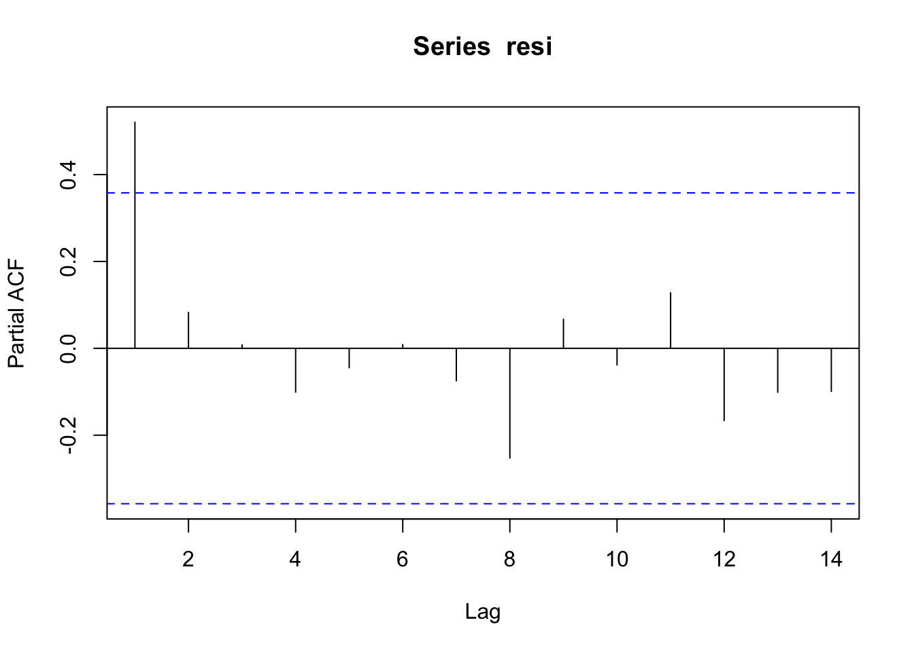

Assuming \(y_t\) can be written as a linear function of \(x\) and the error term \(e\) has aurocorrelation \[y_t = 1.2 + 2.2 x_{1,t} + 2.3 x_{2,t} + e_t \] \[ e_t = \rho e_{t-1} + w_t ,\, where\, w \sim N(0,\sigma^2)\] To simulate \(y\) we do:
library(MASS)
m=20
x <- mvrnorm(n=m,mu=c(0.05,0.08),Sigma=matrix(c(0.0004,0.00023,0.00023,0.0006),nrow=2,ncol=2,byrow=TRUE))
## assuming autocorrelation in x
et <- arima.sim(list(order = c(1,0,0),ar=0.8),n=m,rand.gen=rnorm,sd=0.07)
yt <- 1.2 + x %*% c(2.2,2.3)+etThen we do regress \(y\) on \(x\) using OLS:
regressY <- lm(yt~x)
summary(regressY)##
## Call:
## lm(formula = yt ~ x)
##
## Residuals:
## Min 1Q Median 3Q Max
## -0.20330 -0.11453 -0.03347 0.11267 0.26414
##
## Coefficients:
## Estimate Std. Error t value Pr(>|t|)
## (Intercept) 1.2138 0.1840 6.596 4.54e-06 ***
## x1 -0.0359 3.6451 -0.010 0.992
## x2 1.5047 1.8782 0.801 0.434
## ---
## Signif. codes: 0 '***' 0.001 '**' 0.01 '*' 0.05 '.' 0.1 ' ' 1
##
## Residual standard error: 0.1577 on 17 degrees of freedom
## Multiple R-squared: 0.03784, Adjusted R-squared: -0.07535
## F-statistic: 0.3343 on 2 and 17 DF, p-value: 0.7204regressY$coefficients## (Intercept) x1 x2
## 1.21377721 -0.03590278 1.50464858Test the autocorrelation of residuals
resi <- regressY$residuals
pacf(resi)
ar.ols(resi)## Warning in ar.ols(resi): model order: 10 singularities in the computation
## of the projection matrix results are only valid up to model order 9##
## Call:
## ar.ols(x = resi)
##
## Coefficients:
## 1 2 3 4 5 6 7 8
## 0.7617 0.8848 0.1502 -0.2951 -0.9551 -0.1699 0.7389 0.9940
## 9
## 1.8808
##
## Intercept: 0.3264 (0.03426)
##
## Order selected 9 sigma^2 estimated as 0.0002346Do GLS
\[y_t - \rho y_{t-1} = \alpha (1-\rho) + \beta_1(x_{1,t} - \rho x_{1,t-1}) + \beta_2 (x_{2,t} - \rho x_{2,t-1}) + \epsilon\]
## regress on resi hat
regressE <- lm(resi[2:length(resi)]~resi[1:(length(resi)-1)]-1)
rho <- regressE$coefficients[1]
## GLS
## yt - rho * yt_1 = alpha * (1-rho) + beta1*(x1_t - rho * x1_t-1) + beta *
## (x2_t - rho * x2_t-1)
yt2 <- yt[2:length(yt)]
xt2 <- x[2:nrow(x),]
xprime <- (xt2- c(rho,rho) * x[1:(nrow(x)-1),])
regressY_GLS <- lm( (yt2-rho*yt[1:(length(yt)-1)]) ~ xprime)
summary(regressY_GLS)##
## Call:
## lm(formula = (yt2 - rho * yt[1:(length(yt) - 1)]) ~ xprime)
##
## Residuals:
## Min 1Q Median 3Q Max
## -0.149221 -0.066594 0.008771 0.049226 0.164614
##
## Coefficients:
## Estimate Std. Error t value Pr(>|t|)
## (Intercept) 0.27569 0.03109 8.868 1.42e-07 ***
## xprime1 0.59617 1.82899 0.326 0.74868
## xprime2 2.76506 0.92909 2.976 0.00891 **
## ---
## Signif. codes: 0 '***' 0.001 '**' 0.01 '*' 0.05 '.' 0.1 ' ' 1
##
## Residual standard error: 0.1002 on 16 degrees of freedom
## Multiple R-squared: 0.3847, Adjusted R-squared: 0.3078
## F-statistic: 5.002 on 2 and 16 DF, p-value: 0.02054alpha <- regressY_GLS$coefficients[1]/(1-rho)
alpha## (Intercept)
## 1.124606Cochrane–Orcutt iteration:
CochraneOrcuttIteration <- function(y,x,tolerance) {
diff <- 1
lastBetas <- rep(100,ncol(x)+1)
lastRho <- 100
regressY <- lm(y~x)
resi <- regressY$residuals
regressE <- lm(resi[2:length(resi)]~resi[1:(length(resi)-1)] -1)
rho <- regressE$coefficients[1]
yt2 <- as.matrix(y[2:length(y)])
xt2 <- x[2:nrow(x),]
while(diff > tolerance) {
xprime <- (xt2- c(rho,rho) * x[1:(nrow(x)-1),])
regressY_GLS <- lm( (yt2-rho*y[1:(length(y)-1)]) ~ xprime)
alpha <- regressY_GLS$coefficients[1]/(1-rho)
betas <- c(alpha,regressY_GLS$coefficients[2:length(regressY_GLS$coefficient)])
resi <- y-cbind(1,x) %*% as.matrix(betas)
regressE <- lm(resi[2:length(resi)]~resi[1:(length(resi)-1)])
rho <- regressE$coefficients[2]
diff <- abs(max(betas-lastBetas))
diff <- max(diff,abs(rho-lastRho))
lastBetas <- betas
lastRho <- rho
}
return(betas)
}We redo the above steps for n times:
n=6000
OLS_coefs <- matrix(nrow=n,ncol=3)
GLS_coefs <- matrix(nrow=n,ncol=3)
for(i in 1:n) {
x <- mvrnorm(n=m,mu=c(0.05,0.08),
Sigma=matrix(c(0.0004,0.00023,0.00023,0.0006),
nrow=2,ncol=2,byrow=TRUE))
## assuming autocorrelation in x
et <- arima.sim(list(order = c(1,0,0),ar=0.8),n=m,rand.gen=rnorm,sd=0.07)
yt <- 1.2 + x %*% c(2.2,2.3)+et
regressY <- lm(yt~x)
#summary(regressY)
OLS_coefs[i,] <- regressY$coefficients
## GLS
resi <- regressY$residuals
regressE <- lm(resi[2:length(resi)]~resi[1:(length(resi)-1)])
rho <- regressE$coefficients[2]
## GLS
## yt - rho * yt_1 = alpha * (1-rho) + beta1*(x1_t - rho * x1_t-1) + beta *
## (x2_t - rho * x2_t-1)
# yt2 <- yt[2:length(yt)]
# xt2 <- x[2:nrow(x),]
# xprime <- (xt2- c(rho,rho) * x[1:(nrow(x)-1),])
# regressY_GLS <- lm( (yt2-rho*yt[1:(length(yt)-1)]) ~ xprime)
# alpha <- regressY_GLS$coefficients[1]/(1-rho)
# GLS_coefs[i,1] <- alpha
# GLS_coefs[i,2:3] <- regressY_GLS$coefficients[2:3]
GLS_coefs[i,] <- CochraneOrcuttIteration(yt,x,0.001)
}
colMeans(OLS_coefs)## [1] 1.200898 2.183062 2.297433colMeans(GLS_coefs)## [1] 1.208059 2.190290 2.305902